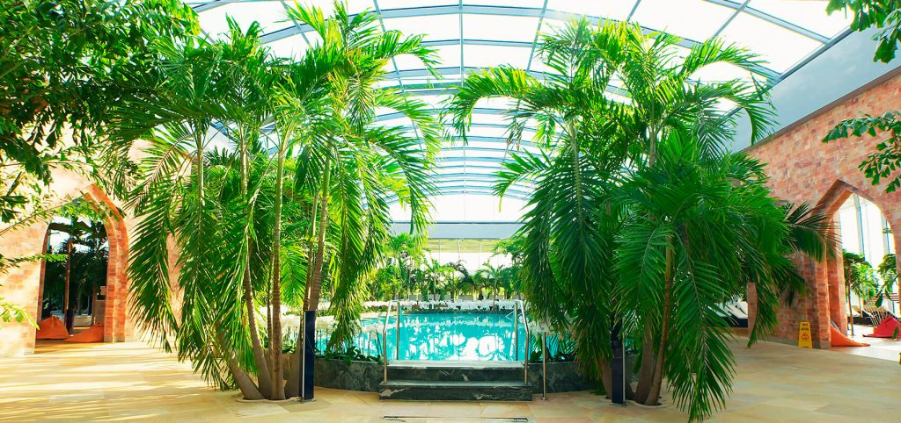
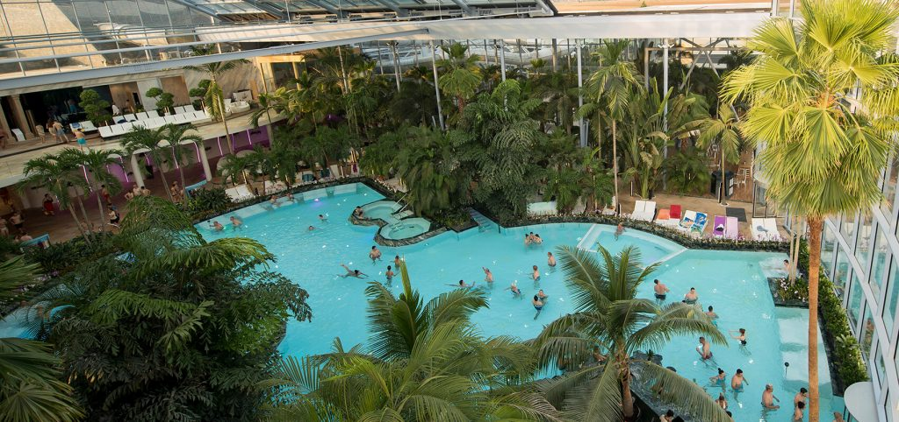
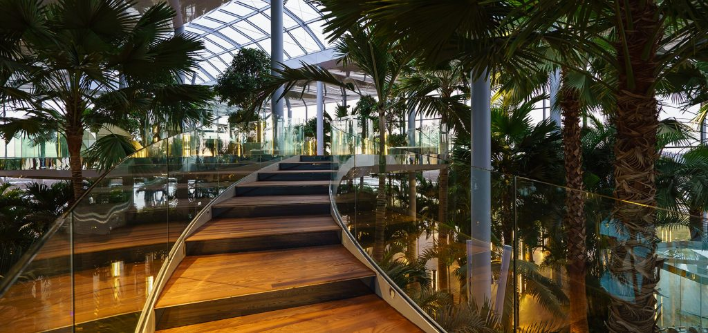

Despre Therme București
Therme București este un complex termal situat în nordul Bucureștiului. Acesta oferă o varietate de facilități și servicii de relaxare și distracție.
Este putin probabil sa locuiesti in Bucuresti si sa nu fi auzit pana acum ca undeva, la doar 10 minute de Capitala, s-a deschis cel mai mare centru de wellness,
relaxare si entertainment din Europa: Therme Bucuresti. O adevarata oaza cu plante exotice, piscine cu valuri si tobogane cu apa termala de care poti sa bucuri
chiar daca afara sunt minus 25 de grade. La Therme, temperatura aerului este intotdeauna de 29-30 de grade, iar a apei, de 30-33 de grade, ideala pentru distractie si balaceala.
Complexul termal este deschis pe tot parcursul anului, astfel că vizitatorii se pot bucura de beneficiile terapeutice ale apei termale în orice moment.
Servicii
- Piscine cu apa termala
- Saune
- Bai de aburi
- Tobogane de apa
- Zone de relaxare
- Restaurante si baruri
- Sala de fitness
- Spa si tratamente de infrumusetare
- Evenimente si activitati speciale
Cum poti sa te distrezi la Therme Bucuresti?
Intregul centru de wellness, care se intinde pe 250.000 de metri patrati, este impartit in trei zone importante: Galaxy, The Palm si Elysium, fiecare avand propriile
facilitati de distractie si relaxare si specific diferit.
Zona Galaxy

In aceasta zona a fost amenajata o piscina cu valuri (are 6 programe, adica sase tipuri de valuri) si 16 tobogane acvatice, care cumuleaza 1,5 kilometri de tobogane acvatice.
Cel mai inalt are 12 metri, dar nu asta este cel mai interesant, ci faptul ca poti alege (atunci cand te dai pe el) unul din cele 6 programe de sunet si lumina care constituie fundalul sonor. Imagineaza-ti cum este sa te dai pe tobogan in plina “furtuna” si sa te simti in mijlocul fulgerelor si al tunetelor!
In plus, zona Galaxy are o multime de spatii de relaxare, pool bar, snack-bar si un restaurant-bar unde poti manca tot ce iti doresti fara sa ai nevoie de bani in buzunar; toata consumatia
este inregistrata cu ajutorul bratarii pe care o primesti la intrare, iar totalul se calculeaza la plecare.
Zona The Palm

Este zona principala a centrului, cu spatii de relaxare pentru adulti mai mari de 16 ani (sau adulti cu copii de pana in 3 ani). Aici vei gasi cele mai mari piscine din complex
(cea mai mare are o suprafata de 1200mp) inconjurate de foarte multe plante exotice – printre care sute de orhidee mov – si o minunata padure de palmieri. Imagineaza-ti cum este sa te relaxezi in sezlongurile cu hidromasaj sau in jacuzzi, in aceasta padure de flori si palmieri. Imaginea este de vis pe inserat, cand piscina devine o feerie; sute de spoturi de lumini colorate creaza o atmosfera pe care nu o vei uita prea curand.
Zona Elysium

Este zona exclusivista, mai scumpa decat celelalte si interzisa celor sub 16 ani. Trebuie sa stii insa ca tariful cuprinde si accesul gratuit in celelalte doua zone(Galaxy si The Palm).
Aici ai la dispozitie spatii intregi de relaxare, masaj, saune tematice (Hollywood, Alhambra, Amazon, Bavaria, Himalaya) gandite si amenajate in cele mai mici detalii – intr-un cuvant,
un adevarat paradis al rasfatului. Ce-ai zice daca ti-am spune ca in aceasta zona poti sa te balacesti in piscina cu seleniu, in mijlocul careia exista un bar?
Este lesne de inteles ca dintr-un asemenea lux nu putea lipsi un restaurant á la carte.